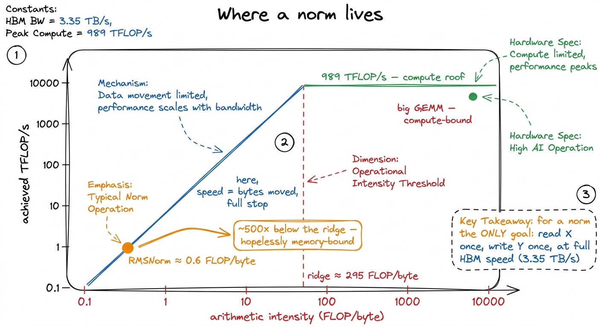
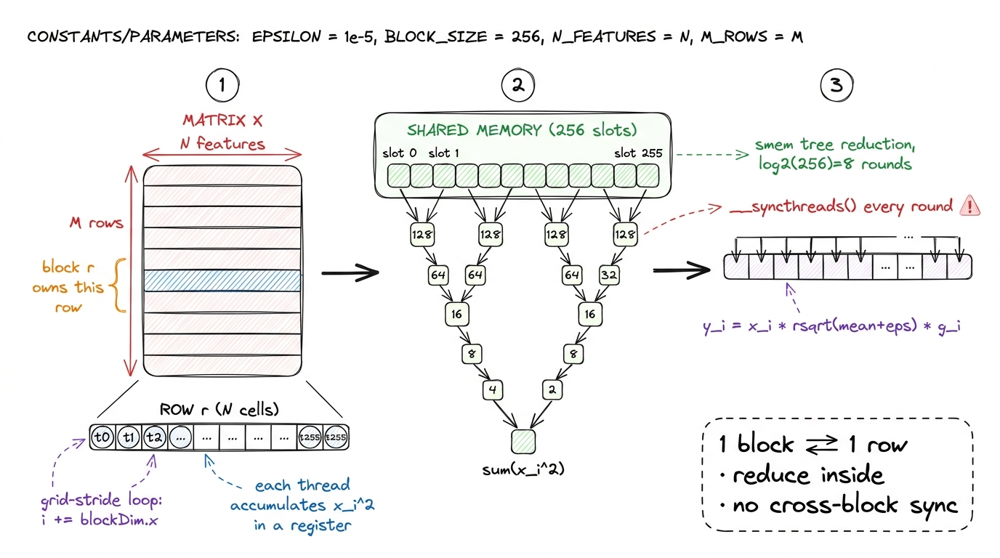
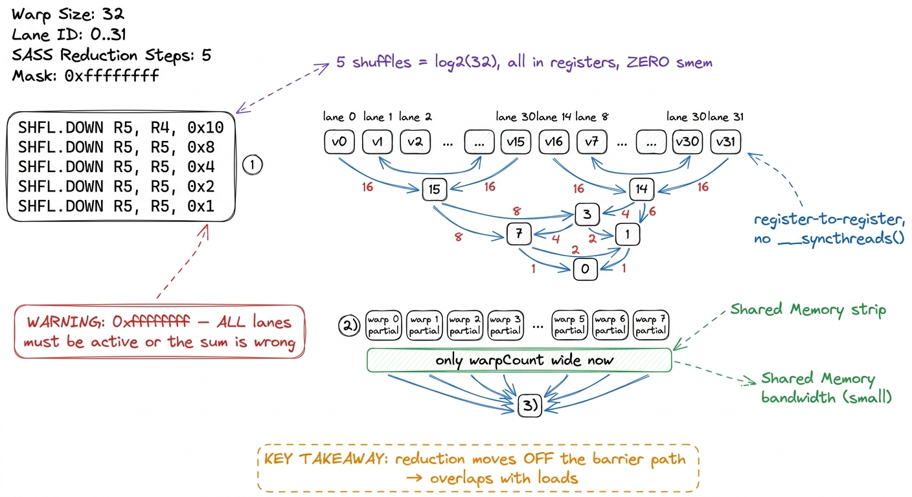
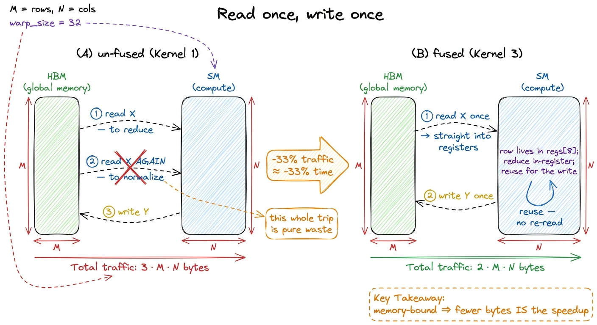

RMSNorm & LayerNorm kernels
Every transformer block has two GEMMs everyone worships and one little operation nobody thinks about: the normalization sitting between them. LayerNorm and its leaner cousin RMSNorm are three lines of math each — subtract a mean, divide by a standard deviation, scale by a learned weight — and they touch a rounding-error fraction of the model's FLOPs. Horace He measured it directly on BERT: normalization and pointwise ops together are about 0.2% of the FLOPs yet a wildly disproportionate slice of the wall-clock time.1 From "Making Deep Learning Go Brrrr From First Principles" — the same essay that anchors the three regimes. The normalization/pointwise layers do "250× and 700× less FLOPS than our matmuls" yet refuse to be free. That gap between FLOPs and time is the whole story of this article, and it is why a well-written norm kernel is one of the most satisfying things you can build.
We are going to write RMSNorm and LayerNorm from scratch, fuse the entire operation into a single pass over HBM, and reduce with warp shuffles instead of shared memory where we can. Along the way I want to convince you that LayerNorm is one of the best benchmarks in all of kernel engineering — good enough that Stanford's CRFM used it as a headline result and hit 484% of PyTorch's FP32 LayerNorm.2 CRFM, "Surprisingly Fast AI-Generated Kernels" (2025). Their best LayerNorm kernel ran ~4.8× faster than torch.nn.LayerNorm on a (16, 64, 256, 256) input — a memory-bound op where the reference simply left bandwidth on the table.
Why a norm is memory-bound, and why that is the whole point
Start with the arithmetic, because it decides everything. Take an input X of shape (M, N) — M rows (tokens), N features each. RMSNorm computes, per row:
rms = sqrt( mean(x_i^2) + eps )
y_i = (x_i / rms) * g_iThat is roughly a handful of FLOPs per element: a square, an add into the accumulator, a divide, a multiply. Call it ~5 FLOPs per element. But to produce those FLOPs you must read every element of X once and write every element of Y once — plus read the N-length weight vector g. So you move about 2 * M * N * 4 bytes (FP32) to do about 5 * M * N FLOPs. Arithmetic intensity is a hair above 0.5 FLOPs per byte.
From the three regimes we know the H100's ridge point is around 989e12 / 3.35e12 ≈ 295 FLOPs per byte. A norm sits roughly six hundred times below the ridge. There is no clever math, no tensor core, no precision trick on the compute side that matters at all. The tensor cores stay dark. The only currency that buys speed here is bytes moved.

figure rendering · A norm sits hundreds of times below the ridge point. The entire optimiSo our target metric is not "% of peak FLOP/s" — that would be a rounding error and would tell us nothing. Our target is achieved HBM bandwidth as a fraction of the 3.35 TB/s peak. A perfect norm kernel is one that reads X and writes Y at streaming speed and does the reduction "for free" in the shadow of those loads.
Kernel 1: one block per row, the naive reduction
The natural decomposition writes itself. A norm reduces within a row and is independent across rows. So: one thread block per row. Block r owns row r, loads it, reduces it, normalizes it, writes it back. Rows never talk to each other, which means no global synchronization, no atomics across blocks — the parallelism is embarrassingly clean.
Inside a block, the N features are split across the block's threads. Each thread grabs a strided slice of the row, accumulates a partial sum of squares in a register, and then the block cooperates to sum those partials into one number. The dumbest way to do that cooperation is a shared-memory tree reduction: every thread writes its partial into smem, then log2(blockDim) rounds of halving-and-adding with a __syncthreads() between each round.
__global__ void rmsnorm_naive(const float* X, const float* G, float* Y,
int N, float eps) {
int row = blockIdx.x;
const float* x = X + (size_t)row * N;
float* y = Y + (size_t)row * N;
__shared__ float smem[1024];
float partial = 0.0f;
for (int i = threadIdx.x; i < N; i += blockDim.x) {
float v = x[i];
partial += v * v; // sum of squares
}
smem[threadIdx.x] = partial;
__syncthreads();
// tree reduction in shared memory
for (int s = blockDim.x / 2; s > 0; s >>= 1) {
if (threadIdx.x < s) smem[threadIdx.x] += smem[threadIdx.x + s];
__syncthreads();
}
float rms = rsqrtf(smem[0] / N + eps); // 1 / sqrt(mean + eps)
for (int i = threadIdx.x; i < N; i += blockDim.x)
y[i] = x[i] * rms * G[i];
}Notice the shape of it: a grid-stride loop so a block of, say, 256 threads can handle any N; a reduction in the middle; a second pass that re-reads the row and writes the output. This works and is correct.

figure rendering · Kernel 1. One block per row, a shared-memory tree reduction in the midProfile it and the first thing Nsight Compute tells you is unsurprising: we are memory-bound (of course we are), but we are not yet at peak bandwidth. Two things hold us back. First, the shared-memory tree reduction serializes the block through eight rounds of __syncthreads(), and during those barriers the memory pipes are idle — we are not overlapping the reduction with useful loads. Second, and worse, we read the row twice: once to compute the sum of squares, once to normalize. That is 3 * M * N bytes of traffic (read X, read X again, write Y) instead of the 2 * M * N an ideal kernel would move.
Kernel 2: warp-shuffle reductions, no shared memory
The tree reduction is the obvious thing to attack, because most of its cost is the barriers, not the adds. Inside a single warp (32 threads) we do not need shared memory or __syncthreads() at all — the threads already run in lockstep, and Hopper gives us a register-to-register exchange: __shfl_down_sync. Each thread hands its partial to a lane below it and adds; five shuffles (log2(32)) collapse a warp's 32 partials into lane 0, entirely inside the register file.3 __shfl_down_sync reads a register from another lane in the same warp. It requires an active-lane mask (the _sync) and, since Volta, no longer assumes lockstep for free — the mask is how you promise the compiler which lanes participate. Divergence inside the reduction is a classic correctness bug here.
__device__ __forceinline__ float warpReduceSum(float v) {
for (int off = 16; off > 0; off >>= 1)
v += __shfl_down_sync(0xffffffff, v, off);
return v; // lane 0 holds the warp's total
}For a block of several warps, we do a two-level reduction: each warp shuffles to its own lane-0 partial, those (few) partials go through smem, and a single warp shuffles them once more. For N up to a few thousand a block is a handful of warps, so the shared-memory hop shrinks from a 256-wide tree to an 8-wide one — a rounding error. The reduction stops being a barrier-bound serial phase and starts hiding in the shadow of the loads.

figure rendering · Kernel 2. The intra-warp reduction lives entirely in registers via `____shfl_down_sync; shared memory shrinks to one slot per warp.This alone gets the reduction out of the critical path. But we are still reading the row twice, and that is now the dominant waste. Time to fuse.
Kernel 3: fuse into one pass, and vectorize the loads
Here is the move that matters most, and it is exactly the lesson from the three regimes: when you are memory-bound, you win by moving fewer bytes. We are currently doing read–reduce–read–write. The second read is pure waste: the row is small enough to keep in registers across the whole operation.
So we fuse: each thread loads its slice of the row into registers once, computes the sum of squares from those registers, reduces to get rms, and then normalizes the values it already holds and writes them out. The row is read exactly once and written exactly once. Traffic drops from 3 * M * N to 2 * M * N — a 33% reduction in HBM bytes, which for a bandwidth-bound kernel is close to a 33% speedup, straight up. It is the same logic as Horace He's x.cos().cos() fusion, where two element-wise ops that would round-trip DRAM become one pass; a norm is just a reduction wrapped in element-wise work, so the reduction forces you to hold the row live between the two phases.

figure rendering · The fusion move. Killing the second read of X drops traffic from 3·M·NThe second lever is the shape of each memory transaction. Reading one float at a time under-uses the memory system; the H100's HBM3 wants wide, aligned transactions. So we load four contiguous floats at once as a float4. One float4 load is 16 aligned bytes — one thread now moves four elements per instruction, quartering the number of load instructions and letting each thread hold a small register array of the row.
template <int VEC = 4>
__global__ void rmsnorm_fused_vec(const float4* X, const float4* G,
float4* Y, int N, float eps) {
int row = blockIdx.x;
const float4* x = X + (size_t)row * (N / VEC);
float4* y = Y + (size_t)row * (N / VEC);
float ss = 0.0f;
float4 regs[8]; // holds this thread's slice, live
int nv = N / VEC, k = 0;
for (int i = threadIdx.x; i < nv; i += blockDim.x, ++k) {
float4 v = x[i]; // one 16-byte transaction
regs[k] = v;
ss += v.x*v.x + v.y*v.y + v.z*v.z + v.w*v.w;
}
ss = blockReduceSum(ss); // warp shuffles + tiny smem hop
float inv = rsqrtf(ss / N + eps);
k = 0;
for (int i = threadIdx.x; i < nv; i += blockDim.x, ++k) {
float4 g = G[i], v = regs[k]; // reuse the registers — no re-read
y[i] = make_float4(v.x*inv*g.x, v.y*inv*g.y,
v.z*inv*g.z, v.w*inv*g.w);
}
}Now the kernel does what an ideal norm should: stream the row in through wide aligned loads, reduce in registers, stream it back out. Nsight Compute's memory chart flips from "lots of barriers, medium bandwidth" to a clean near-roofline HBM utilization. On a large (M, N) input this lands in the neighborhood of 80–90% of the 3.35 TB/s peak — which is, for a memory-bound kernel, the equivalent of the GEMM ladder's late kernels: nearly all the bytes moving at nearly full speed, with the reduction hidden underneath.4 The exact fraction depends on N. Small N leaves the block under-occupied and launch overhead visible; very large N spills the per-thread register array and forces smaller blocks. The regs[8] array assumes the slice fits — real kernels template on N or fall back to a two-pass path when it doesn't.
LayerNorm: the same skeleton, one more moment
LayerNorm is RMSNorm plus a mean subtraction and a bias. Instead of one reduction (sum of squares) you compute two: the mean, and then the variance around it.
mu = mean(x)
var = mean((x - mu)^2)
y_i = (x_i - mu) / sqrt(var + eps) * g_i + b_iThe naive route reduces twice, which means two passes and two barriers. The good route computes both moments in a single pass by accumulating sum(x) and sum(x^2) together, then recovering variance as E[x^2] - E[x]^2.5 E[x^2] - E[x]^2 is numerically shaky in FP32 when the mean is large relative to the variance — catastrophic cancellation. Production LayerNorm kernels often use Welford's online algorithm, which merges partial (count, mean, M2) triples through the same warp-shuffle machinery and stays stable. Same reduction skeleton, different combine function. Both partial sums ride the exact same __shfl_down_sync reduction we already built — you shuffle a two-element payload instead of one. Everything else — block-per-row, float4 loads, register-resident fusion, single read and single write — is identical.
That structural sameness is why LayerNorm is such a good benchmark, and why CRFM's search landed on it. It is small enough to hold entirely in your head, it is memory-bound so the answer key is unambiguous (did you hit HBM roofline or not?), and yet PyTorch's stock kernel leaves enough on the table that a well-fused, well-vectorized version reaches 484% of the FP32 reference. A 4.8× win on an operation that is "0.2% of the FLOPs" is the purest possible demonstration of the thesis of this whole site: in the memory-bound world, bytes are the only thing you optimize, and the compiler will not do it for you.
The habit this reinforces
Predict the regime, then measure it. A norm is memory-bound before you write a line — so the goal was never FLOP/s, it was bandwidth, and every optimization we reached for (warp shuffles, fusion, float4) was a bytes-or-barriers optimization, not a math one. That is the discipline: let the regime pick the menu.
Next in this section we take the same block-per-row, warp-shuffle skeleton and point it at a harder reduction — the online softmax at the heart of attention — where the "single pass, numerically stable, hidden reduction" pattern becomes the load-bearing idea behind FlashAttention.